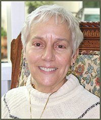

Dear Friends of Holy Spirit Retreat Center,
Once again we are beginning a new liturgical year with the coming of Advent, and are poised on the brink of a new calendar year. The prospect of new beginnings and new possibilities lies tantalizingly before us. It’s a liminal time in which we pause to look back over the past year and give thanks for its blessings, and its challenges, while we look ahead to what is coming with an air of expectancy mixed with uncertainty as we walk into the unknown. The word “liminal” comes from the Latin word “limina”, which means “threshold”. We are indeed standing at the threshold of a new season, and we have many new programs scheduled that will help you as you step across the threshold and journey into the New Year. On October 11, 2012 the church celebrated the 50th anniversary of the beginning of Vatican II and the Pope has declared this year the Year of Faith. Catholics everywhere are called to renew their relationship with Christ and to recommit themselves to their call to discipleship. We are offering a day on the teachings of Vatican II, and our Holy Week Retreat will examine the call to renew our faith. Part of our call to discipleship involves seeing and responding to the signs of the times. We are living in a world that is becoming more polarized. In the gospel of John, Jesus speaks of our oneness with God and one another. If you are interested in addressing this struggle, and you are looking for a more meaningful way to begin the New Year, you might consider joining us for our annual New Year’s Retreat. This year’s title is, “Wholly Holy” and we’ll be looking at our call to unity and discussing how we can be part of the solution, rather than part of the problem. The retreat is designed not just for christians, but for people of all faiths. Call our office for more information. As always, at this time of year, I pause to give thanks to God for our many blessings, and most of all for the blessing of your presence and support for us and what we are doing at Holy Spirit Retreat Center. May God continue to bless you and your loved ones, not only at this holiday time, but throughout the coming year.
Yours in love and gratitude,
Blessings, Chris
If these is anything else you need, or you have a question, just let me know. Thanks so much for all that you do!